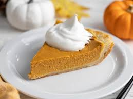

Pumpkin Pie

Description
A popular recipe for a delicious pumpkin pie, as found on the Allrecipes website.
It requires about 10 min prep time and 50 min cook time.
Ingredients
- 2 large eggs
- 1 tsp ground cinnamon
- 1⁄2 tsp ground ginger
- 1⁄2 tsp ground nutmeg
- 1⁄2 tsp salt
- 1 unbaked pie crust
Steps
- Preheat oven to 425F.
- Whisk pumpkin puree, condensed milk, eggs, cinnamon, ginger, nutmeg, and salt together in a medium bowl until smooth.
- Pour into crust.
- Bake in preheated oven for 15 min.
- Reduce to 350F and bake until a knife inserted 1 in comes out clean; 35-40 min.
- Let cool before serving.